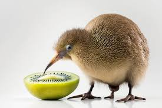

<!doctype html>
<html lang="pt-br">
      <head>
            <metacharset="UTF=8">
            <metaname="viewpart" content="width=device-width intial-scale=1.0>
            <title>João Lucas Tutchak</title>
            <style>
                  mark {
                        background-color:pink;
                  }
            </style>
      </head>
      <body>
            <h1>João Lucas Tutchak</h1>
            <p><mark>meu animal favorito é lontra, cor favorita amarelo (eu acho), palavra favorita é kiwi e fruta favorita é pêssego</mark></p>
            <h2>kiwi</h2>
            <p>eu tinha descobrido em alguma fase da minha vida, que palavras com y e w não são brasileiras, me pergunto como seria um kiwi que fosse traduzido ou alguma coisa assim</p>
            <h3>kiwi é animal</h3>
            <p>descobri que existem kiwis que são animais, tipo umas aves, sera que da pra comer kiwi?</p>
            
</html>
